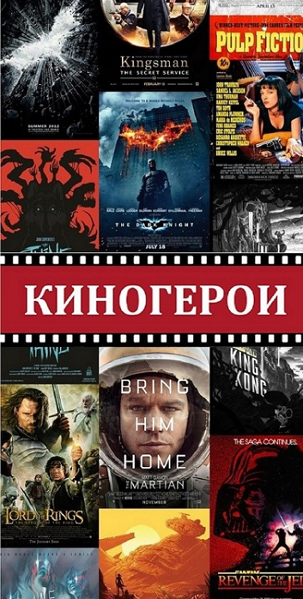

Кинематограф стал неотъемлемой частью нашей жизни. Сейчас мы можем наблюдать за постоянно развивающейся графикой, продуманными до мелочей героями, которые помогают прочувствовать нам каждую их эмоцию. Мы видим, как воплощаются все новые и новые идеи начинающих или уже всеми любимых творцов. Все это позволяют нам окунуться в другую реальность, забыв о своих проблемах хоть на время.
Фильмы, как сотню лет назад, так и по наши дни, заставляют зрителей погрузиться в абсолютно иную вселенную, ту, которой, быть может, не существует в реальной жизни. Во время просмотра кино, мы проживаем миллионы судеб, ставя себя на место главных героев. Мы развиваем нашу фантазию и подсознательное мышление. Видя ошибки киногероев, мы тоже учимся на них и становимся лучше благодаря их примеру.
Цитаты многих героев становятся культовыми, и мы порой можем слышать их в повседневной жизни. Чтобы узнать одну из таких цитат, принадлижащую какому-либо герою фильма, просто нажмите на кнопку :)